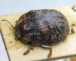
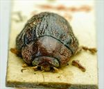
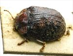
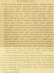

Click on images to enlarge
{kind=link}

Paropsis baldiensis type specimen, dorsal view
{kind=link}

Paropsis baldiensis type specimen, anterior view
{kind=link}

Paropsis baldiensis type specimen, lateral view
{kind=link}

Paropsis baldiensis, description
Name
Trachymela baldiensis (Blackburn, 1896)
Type specimen
Location: BMNH
Label data: “Type” (red-bordered circle), “6173 T H” (on card with specimen), “Blackburn coll. 1910-236.”, “Paropsis baldiensis Blackb.”
Male, Size: 7.65 x 5.7 x 2.9 mm; A-A: 1.17.
Head brown with black behind eyes; pronotum brown with parts of posterior margin black, disc smooth, shiny, punctures quite small and somewhat indistinct, lateral margins clearly explanate; elytra quite ruggedly sculptured with a common relatively smooth black area around summit, many black verrucae of irregular, sometimes elongate shape present, sides explanate.
Original description
[Original description shown in figure, translated from Latin using ChatGPT, 03/2026]
♂. Rather broadly ovate, moderately convex, of somewhat greater height (seen from the side), the highest point placed about the middle of the elytra (or even further back); shining; beneath pitchy, here and there reddish; head and prothorax reddish (in some specimens more or less darkened); elytra pitchy and reddish, irregularly variegated; legs and antennae reddish, the latter becoming darker toward the apex.
Head rather closely and finely punctulate; prothorax wider than long in the ratio of about 2½ : 1, dilated from the apex to the middle, then near the apex transversely but not distinctly impressed, less even, finely and not densely (more coarsely rugulose at the sides) punctulate; sides rather evenly rounded, broadly and strongly flattened; posterior angles rounded; scutellum almost smooth.
Elytra distinctly depressed below the humeral callus, then before the base broadly and strongly transversely impressed; punctation fairly coarse and rather dense, somewhat in rows (a little more so at the sides, much less so behind); with rather numerous, shining, black verrucae, somewhat unequal, present on the posterior half; interstices (especially behind) rugulose; the marginal portion broad and directed rather outward from the disc, well separated by a continuous groove; humeral callus with its inner distance from the suture only a little greater than from the lateral margin of the elytra.
Basal ventral segment sparsely and finely punctulate.
Length 3½ lines (~7.4 mm); width 2½ lines (~5.3 mm).Notes
Blackburn (1896) deals with P. baldiensis as part of his subgroup ii (i.e., those species without "strongly marked characters", whose greatest height is not or scarcely in front of the middle of the elytral margin and whose elytra are depressed under the humeral callus). Within that group, he characterises it as:
(1) inner edge of humeral callus distinctly nearer to lateral margin of elytra than to suture;
(2) sides of prothorax more or less explanate;
(3) elytra not having well-defined continuous costae;
(4) puncturation of the elytra not particularly fine;
(5) upper surface of elytra in general, or at least the verrucae, black or nearly so;
(6) explanate margins of prothorax wide (each about 1/3 of width of discal part);
(7) postbasal impression of elytral disc very strong.
This is almost certainly Ta56.
References
Blackburn, T. 1896, "Revision of the genus Paropsis. Part I", Proceedings of the Linnean Society of New South Wales, vol. 21, no. 4, 637-693 (page 659).
Copyright © 2026. All rights reserved.